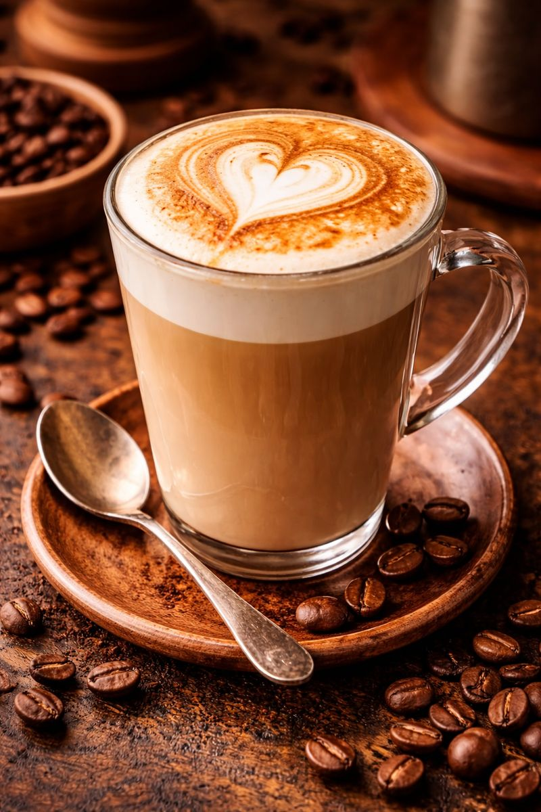

Informações do Café
O latte leva mais leite que o cappuccino, ficando ainda mais suave e cremoso. É perfeito para quem prefere um café menos forte, mas ainda cheio de sabor.
Ingredientes
- Café Expresso
- Leite Vaporizado
Preparo
O preparo do café latte envolve a combinação de uma ou duas doses de café espresso com uma quantidade generosa de leite vaporizado e uma fina camada de espuma de leite por cima. A proporção clássica é de aproximadamente 1/3 de café para 2/3 de leite vaporizado, finalizado com a espuma.
Preço
- 7,50 a unidade (a partir de 3)
- R$ 8,50 a unidade
Voltar